FE2B
Fluids lab for Environment, Engineering, and Biology
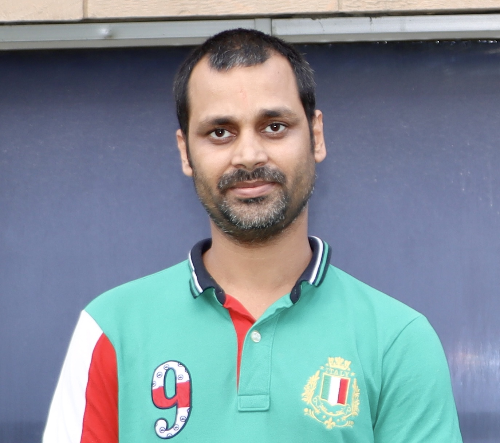
Assistant Professor, IIT Delhi
PhD: IISc Bangalore
PostDoc: DAMTP Cambridge, and
Weizmann Institute of Science
The FE2B group is part of the Department of Applied Mechanics, IIT Delhi. Our research focuses on understanding how fluid mechanics governs and influences problems in engineering, environmental systems, and biological contexts. Particularly, our focus is on turbulent, stratified, and elastic flows. We are a group of experimentalists with a strong inclination toward developing first-principles-based models and formulating new concepts for the following applications:
- Air curtain mixing dynamics, building flows, and air pollution
- Vortex ring-droplet interactions and energy extraction via vortex-induced vibrations
- Biofluidic models for cancer cell hemodynamics and airborne disease transmission
- Underwater acoustic signatures, drag reduction for green shipping, and viscoelastic channel flow turbulence
- Vortex-induced vibrations in dam gates, and dry granular mass flows during landslides
Prof. Narsing Kumar Jha leads this FE2B lab with a dedicated PhD, MSR, MTech, PGDIIT (NCW) students, project scientists, and BTech students. He is an Assistant Professor in the Department of Applied Mechanics at IIT Delhi. Previously, he was a PBC VATAT Postdoctoral Fellow at the Weizmann Institute of Science, Israel, working with Prof. Victor Steinberg on flow instabilities in complex fluids. Prior to that, he was a postdoc at the University of Cambridge, exploring air curtains for energy-efficient buildings with Prof. Paul Linden. He completed his PhD at IISc Bangalore, focused on two-phase turbulent flows with Prof. R. N. Govardhan.
Interested students seeking opportunities for Master’s or PhD studies are encouraged to contact Prof. Narsing Kumar Jha at narsingjha@am.iitd.ac.in.
Research
Kelvin-Helmholtz-like elastic instability in plane Poiseuille flow

Click here for more details
Effect of human passage on air curtain sealing effectiveness

Click here for more details
Origin of thin film circular hydraulic jump

Click here for more details
Interaction of bubbles with vortical structures

Click here for more details
Flow physics of air curtains
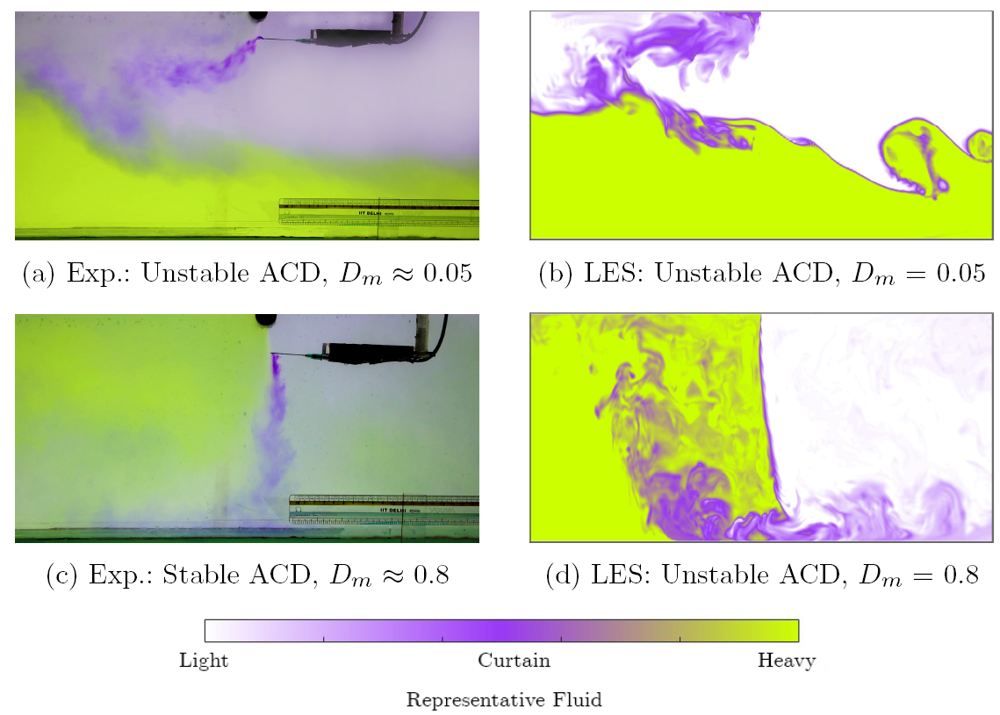
Click here for more details
Correlating indoor spatiotemporal CO2 and pathogen quanta concentrations

Click here for more details
Underwater acoustic signatures

Click here for more details
Dry granular mass flows during landslides
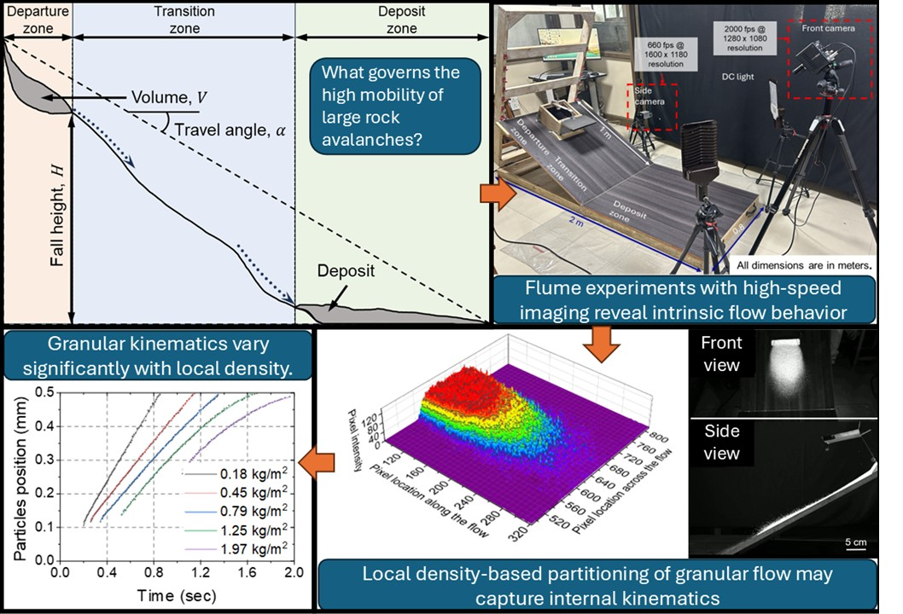
Click here for more details
Energy extraction from flow-induced motions (autorotation)

Click here for more details
Members
Principal Investigator
Narsing Kumar Jha
Assistant Professor
Department of Applied Mechanics, IIT Delhi
PhD Students
Abhijeet Singh
(Co-advised by Deepanshu Shirole)
Research Topic:
Experimental Investigations on Dry Granular Mass Flow using Flume based Physical Model
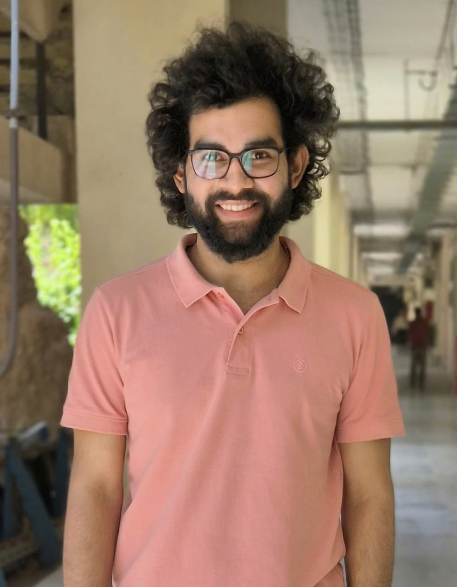
Bhramar Sanjay Pustode
(Co-advised by Amitabh Bhattacharya)
Research Topic:
Energy Extraction via vortex Induced Vibration
Kumar Saurabh
(Co-advised by V.K. Chalamalla)
Research Topic:
Drag Reduction Strategies for Green Shipping

Manoj Kumar Gupta
Research Topic:
Experimental Study of Interaction of Vortex Rings with
Droplets
Sitaram Sahu
(Co-advised by Sachin Kumar B)
Research Topic:
Development of
Bio-Fluidic Model to Study the Role of Hemodynamic Forces on Cancer Metastasis
Suraj Narayan Dhar
Research Topic:
Underwater Acoustic Signatures of Interaction of Bubbles and Vortices
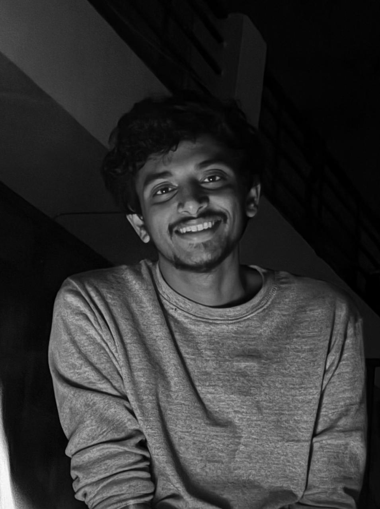
Vamsi K Bankapalli
(Co-advised by Jay Dhariwal)
Research Topic: Synergetic impacts of spatiotemporal CO2 and PM2.5 dynamics on indoor airborne disease transmission
MS(Research) Students
Vinay Likhar
2021-Present
Research Topic:
Trasition and Turbulence in Viscoelastic Channel Flows
Deeptanu Das
2022-Present
(Co-advised by V.K. Chalamalla)
Research Topic:
Numerical Simulation
of Air Curtain Flows

Aditya Mishra
2023-Present
(Co-advised by Ajeet Kumar)
Research Topic:
Numerical Simulation and Physical Modelling of
Vortex Induced Vibrations in Dam Gates

Shubham Singal
Research Topic:
Aerodynamic mechanisms responsible for autorotation of a flat plate
PG Students
Abhiram K
2022-Present
Research Topic:
Design and Development of Wake Homing Decoy
Bhanu Sahu
2022-Present
Research Topic:
Development and Construction of UUV (unmanned underwater vehicle)
Aman Kumar
2022-Present
Research Topic:
Design and Optimisation of Shower Head
Sujeet Kumar
2022-Present
Research Topic:
Elastic Instability for High Reynolds Number Flow
Priyam
2022-Present
Research Topic:
Energy Extraction from Angular Vortex Induced Vibrations
Dinesh Kumar
2022-Present
Research Topic:
Design and Fabrication of a Underwater Vehicle
Project Associates
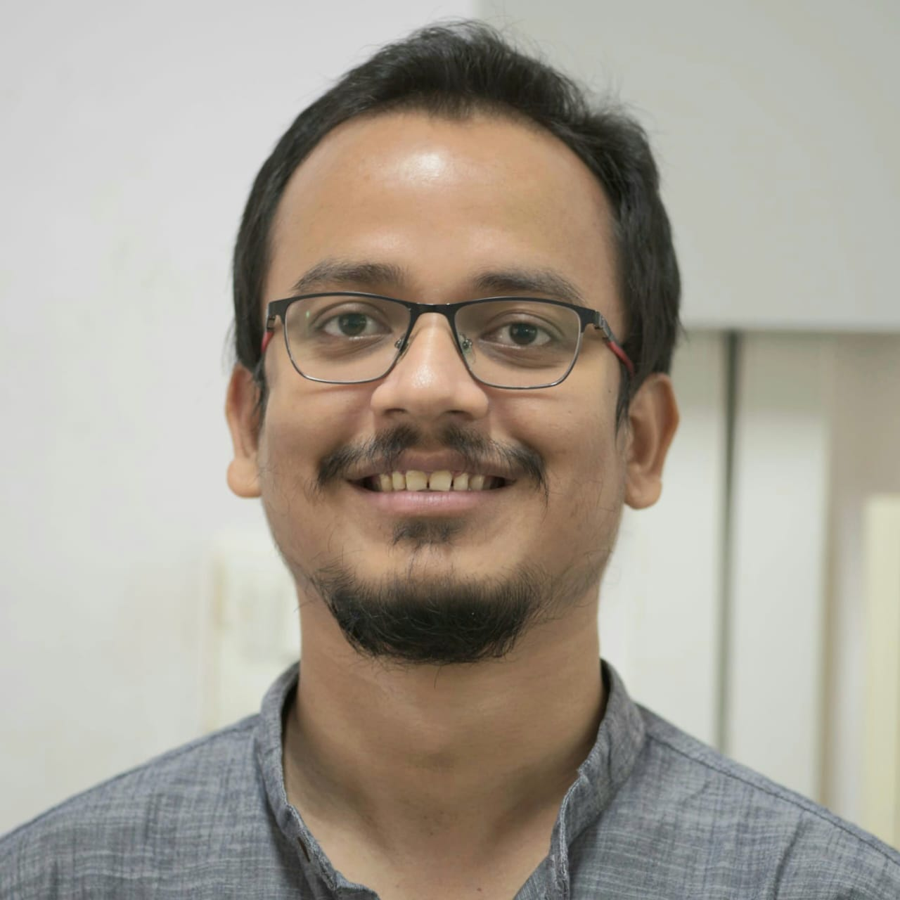
Ritwik Das
2022-Present
Research Topic:
Search for Universal Mechanisms in Passive Drag Reduction in Turbulent Flows
B Tech Students
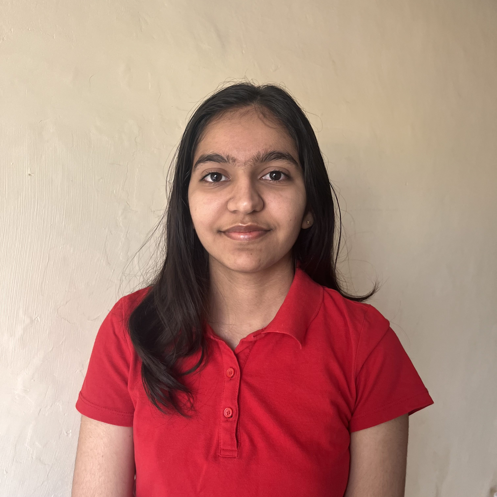
Preeti Choudhary
July 2023-Present
Shrijit Shaswat
July 2023-Present
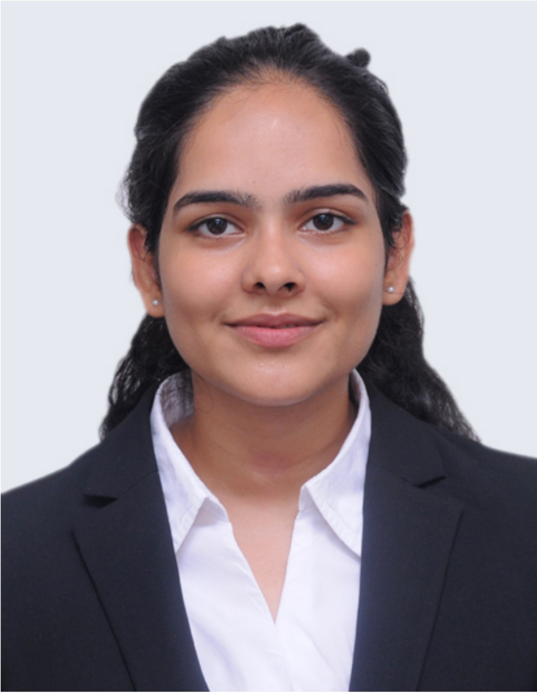
Kanishka
July 2023-Present
Akula Jayanth
July 2023-Present
Alumni

Hari Prasad Bind
Graduated '22
(Interaction of Vortex Ring with Droplets)
Currently at IOCL

Adarsh Saini
Graduated '22
(Origin of Hydraulic Jump in a 2D Channel Flow)
Currently at IIT Roorkee
Amit Kumar
Graduated '22
(Design and Fabrication of Energy Harvestor Based on Vortex Induced Vibration)
Currently at HCL
Bikrant Rawat
Graduated '22
(Design and Optimization of Shower Head)
Currently at ISRO
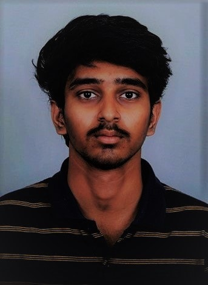
Shubham Toke
Graduated '23
(Turbulent Flow in Microfluidics)
Currently at TVS Motor
Avinash Bhamu
Graduated '23
(Design and Fabrication of a Remotely Operated Underwater Vehicle)
Currently at Oceaneering

Riya Chaudhary
Graduated '23
(Energy Extraction from Vortex Induced Vibrations)
Currently at Bajaj Auto
FE2B Facilities
Experimental Facilities
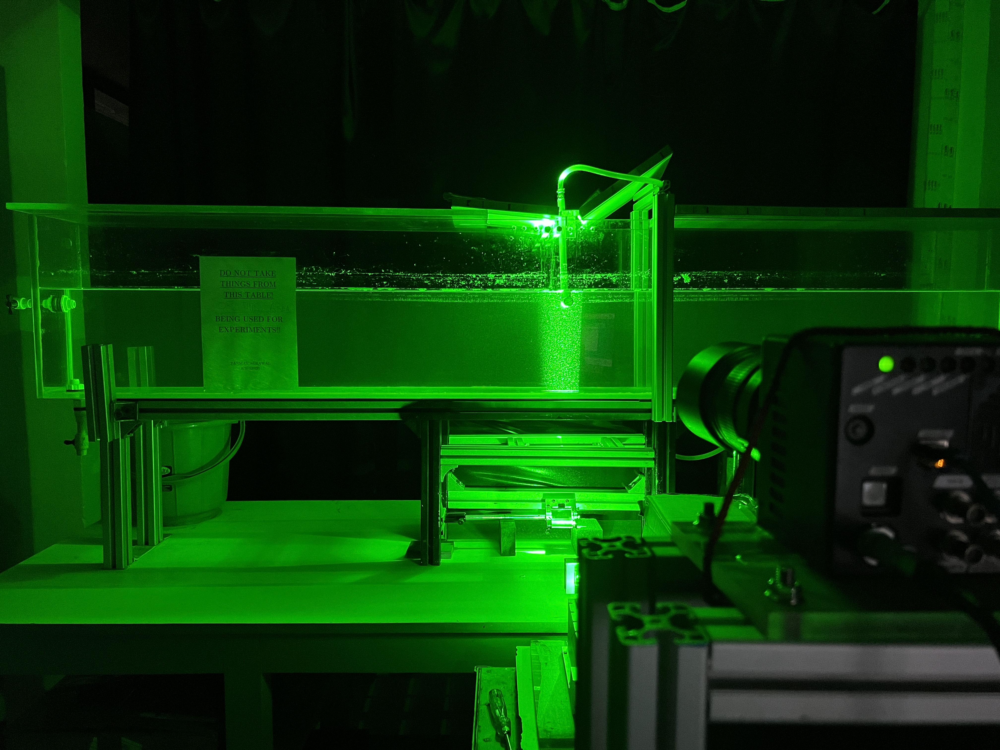
Particle image velocimetry (PIV) measurements in air curtain flows
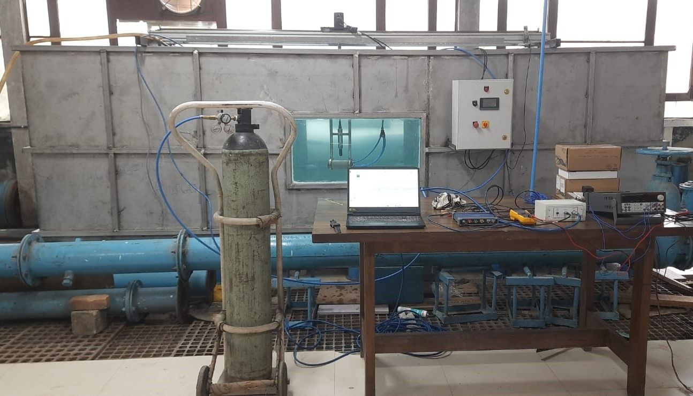
Acoustic measurement of compressed air bubble from a sintered nozzle using Hydrophone SONAR NEPTUNE
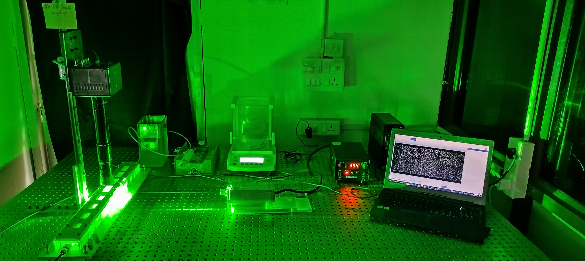
Flow visualization using time resolved µPIV in a 2D microchannel to study biofluid dynamics and flow instabilities
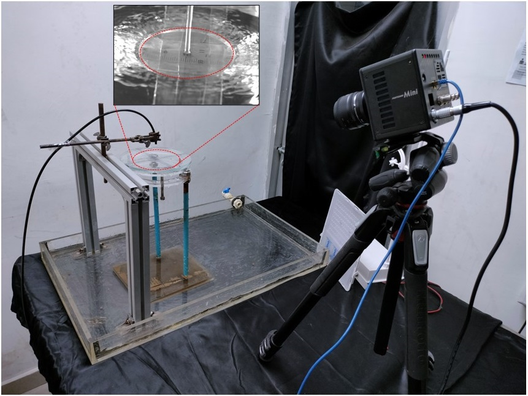
Study of circular hydraulic jump (CHJ)
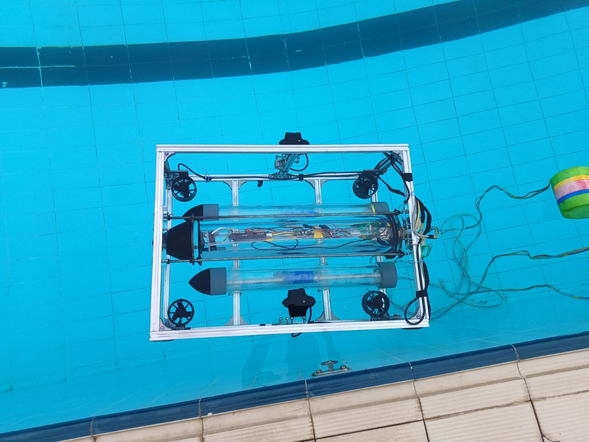
Remotely operated underwater vehicle
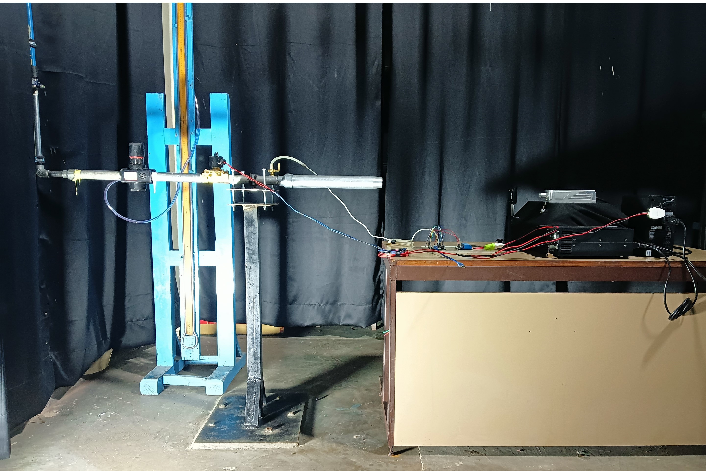
Multiphase turbulent flow facility to study cloud microphysics
Publications
Prof. Narsing PhD Thesis (2015). PDF
Journals
Effects of lateral stratification on the dynamics of turbulent impinging line fountains (2026).
T. Agrawal, V. K. Chalamalla, and N. K. Jha
Journal of Fluid Mechanics (accepted for publication)
Interaction of a bubble with vortical structures in a horizontal turbulent channel flow (2026).
NK Jha, MI Gupta, RN Govardhan
Physics of Fluids 38 (1)
Experimental investigation of acoustically forced helium jet in crossflow using shadowgraphy and modal analysis (2025).
A Kumar, SR Sahu, NK Jha, A Sinha
Physics of Fluids 38 (11)
Implications of the spatiotemporal distribution of CO2 on indoor air quality: A field study with reduced-order modeling (2025).
V Bankapalli, NK Jha, J Dhariwal, S Srirangarajan
Building and Environment 269, 112451
Injectable Hydrogels for Liver: Potential for Clinical Translation (2025)
A Vasudevan, D Ghosal, SR Sahu, NK Jha, P Vijayaraghavan, Sachin Kumar, S Kaur
Chemistry–An Asian Journal 20 (2), e202401106
Performance and flow dynamics of heavy air curtains using experiments and numerical simulations (2024)
T Agrawal, S Agarwal, VK Chalamalla, NK Jha
Environmental Fluid Mechanics 24 (5), 875-898
Numerical investigation of air curtain flows in the doorway of a building using RANS and LES (2023)
T Agrawal, VK Chalamalla, NK Jha
Computers & Fluids 263, 105948
Air curtains: validation of results from small-scale laboratory waterbath experiments by real-scale measurements in climate chambers and numerical simulations (2022)
D Frank, NK Jha, FGH Koene, REJ Kemp, A Twerda, PF Linden
Energy and Buildings 277, 112538
Elastically driven Kelvin–Helmholtz-like instability in straight channel flow (2021)
NK Jha, V Steinberg
Proceedings of the National Academy of Sciences (PNAS) 118 (34), e2105211118
Contaminant transport by human passage through an air curtain separating two sections of a corridor: part I–Uniform ambient temperature (2021)
NK Jha, D Frank, PF Linden
Energy and Buildings 236, 110818
Contaminant transport by human passage through an air curtain separating two sections of a corridor: Part II–two zones at different temperatures (2021)
NK Jha, D Frank, PF Linden
Energy and buildings 236, 110728
Universal coherent structures of elastic turbulence in straight channel with viscoelastic fluid flow (2020)
NK Jha, V Steinberg
arXiv preprint arXiv:2009.12258
Effect of bubble distribution on wall drag in turbulent channel flow (2019)
NK Jha, A Bhatt, RN Govardhan
Experiments in Fluids 60 (8), 127
On the origin of the circular hydraulic jump in a thin liquid film (2018)
RK Bhagat, NK Jha, PF Linden, DI Wilson
Journal of Fluid Mechanics 851, R5
Interaction of a vortex ring with a single bubble: bubble and vorticity dynamics (2015)
NK Jha, RN Govardhan
Journal of Fluid Mechanics 773, 460-497
Controlling air solubility to maintain “Cassie” state for sustained drag reduction
D Dilip, NK Jha, RN Govardhan, MS Bobji
Colloids and Surfaces A: Physicochemical and Engineering Aspects 459, 217-224
Conference proceedings and abstracts:
Role of buoyancy-driven infiltration on indoor particulate accumulation.
Vamsi Bankapalli, NK Jha, and Jay Dhariwal,
Proceedings of the National Conference on Fluid Mechanics and Fluid Power (FMFP 2025), Nirma University, Ahmedabad, India.
(2025).
Mechanism of fluid infiltration and mixing in plane jets with applications to environmental flow.
T Agrawal, NK Jha, VK Chalamalla,
Division of Fluid Dynamics Annual Meeting 2025.
(2025).
Full-scale spatiotemporal CO2 measurements as a proxy for understanding the airborne dispersion of infectious microbes in indoor environments.
Vamsi Bankapalli, Narsing K. Jha, Jay Dhariwal, Saran Raj K, Seshan Srirangarajan,
Healthy Buildings 2025 Asia.
A reduced-order model to visualize transient passive scalar concentration distribution in indoor spaces.
Vamsi Bankapalli, Narsing K. Jha, Jay Dhariwal, Seshan Srirangarajan,
Healthy Buildings 2025 Asia.
Energy Extraction from Fluid Flow via Autorotation of Flat Plate.
Bhramar Pustode, Amitabh Bhattacharya, Narsing Kumar Jha,
Proceedings of the 11th International and 51st National Conference on Fluid Mechanics and Fluid Power (FMFP 2024), Aligarh Muslim University (AMU), Aligarh, India.
(2024).
Velocity statistics of air curtain flows using LES and PIV.
Tanmay Agrawal, Narsing K. Jha, Vamsi K. Chalamalla Presented in the 1st European Fluid Dynamics Conference,
EFDC1 held at RWTH University, Aachen, Germany in September 2024. (2024).
Towards understanding air curtain flows using RANS based numerical simulations.
Tanmay Agrawal, Narsing K. Jha, Vamsi K. Chalamalla Proceedings of the ISHMT-ASTFE
Heat and Mass Transfer Conference, IIT Madras, Chennai, Tamil Nadu, India (2021).
On the origin of the circular hydraulic jump: a differential analysis.
P. F. Linden, R. K.
Bhagat, N. K. Jha and D. I. Wilson, 21st Australasian Fluid Mechanics Conference; Adelaide, Australia
(2018), PDF.
Effect of human walking on air curtain sealing in the doorway of an airtight building..
Narsing K. Jha, Lilian Darracq, Daria Frank, Paul F Linden, Air Infiltration and Ventilation Center (AIVC),
Nottingham, UK (2017), PDF.
Effect of liquid surface tension on circular and linear hydraulic jumps; theory and experiments.
Rajesh Kumar Bhagat, Narsing K. Jha, Paul Linden, D I Wilson, APS Division of Fluid Dynamics Annual
Meeting, Denver, Colorado (2017).
On the origin of hydraulic jump.
Rajesh Kumar Bhagat, Narsing K. Jha, Paul Linden, D I
Wilson, UK Fluids 2018, University of Manchester, UK (2017).
A single bubble in a turbulent channel flow: Towards understanding drag reduction.
R. N.
Govardhan, Narsing K. Jha, APS Division of Fluid Dynamics Annual Meeting, Portland, OR (2016).
Vorticity dynamics in the interaction of a single bubble with a vortex ring.
Narsing K.
Jha, R. N. Govardhan, Journal of Fluid Mechanics APS Division of Fluid Dynamics Annual Meeting,
Boston, MA (2015).
Interaction of a vortex ring and a bubble.
Narsing K. Jha, R. N. Govardhan, Journal of
Fluid Mechanics APS Division of Fluid Dynamics Annual Meeting, San Francisco, CA (2014).
Vorticity and bubble dynamics of a vortex ring interacting with a bubble.
Narsing K. Jha,
R. N. Govardhan, IUTAM Symposium on Multiphase flows with phase change: challenges and opportunities, IIT
Hyderabad, India (2014).
Teaching
- Engineering Mechanics, APL100
- Mechanics of Solids and Fluids, APL105
- Mechanics of Fluids, APL107
- Engineering Thermodynamics, APL206
- Experimental Techniques in Fluids and Solids, APL390
- Solid & Fluids Lab, AMP262
- Applied Fluid Mechanics, AML713
Funding
Projects/Consultancies
| Project Name | Sponsoring Agency | Sanctioned Funds (Rs.) |
|---|---|---|
| Design and Fabrication of Pitot Tube for CW Flow Measurement (PI) | Meja Urja Nigam Private Limited, Uttar Pradesh | 680000.00 |
| Green Shipping: Drag Reduction of Underwater Bodies by Modifying the Surface and Flow Conditions (PI) | Ministry of Ports, Shipping and Waterways | 7609624.00 |
| Calibration of Water Pitot Tube (PI) | TUV SUD South Asia Private Limited, Greater Noida | 30000.00 |
| A study/Analysis of the Cause of High Noise and Vibration of RPS (PI) | Government Agency | 1447703.00 |
| Measurement of CO2 Level as a Proxy for Pathogens in Indoor Microenvironment and Adjusting Fresh Air Intake depending on Air Quality in Indoor Spaces (Co-PI) | Centre of Excellence for Research on Clean Air (CERCA), IIT Delhi | 876000.00 |
| Design, Development and Optimization of Nozzle for Bubble Cloud Generation/Phony Wake System (PI) | Government Agency | 4947976.00 |
| Search for Universal Mechanisms in Passive Drag Reduction in Turbulent FLows (Co-PI) | Science and Engineering Research Board (SERB) | 6181315.00 |
| Design, Development, Fabrication and Testing of HIgh Accuracy Flow Meter (Co-PI) | Industry | 9131356.00 |
| Development of Hybrid RANS-LES Techniques for CFD of Horizontal Axis Wind Turbines (Co-PI) | ReNew Power | 3468000.00 |
| Design and Fabrication of Remotely Operated Underwater Vehicle (Co-PI) | IIT Guwahati Technology Innovation and Development Fund | 3000000.00 |
| Equipment Matching Grant to Prof. Narsing Kumar Jha, Department of Applied Mechanics (PI) | IRD, IIT Delhi | 2970000.00 |
May contact for consultancies related to flow measurement/device design, industrial flows, ships, non-Newtonian flows, micro fluidics, environmental flow, energy harvesting from flow etc.
Gallery
Bubble dynamics at super hydrophobic surface in 100 micron holes for drag reduction in microfluidics
Side view of interaction of vortex ring with a bubble
Complex bubble path due to its interaction with eddies in turbulent channel flow
Elastically driven Kelvin Helmholtz like instability in planar channel flow
Effect of surface tension (critical concentration of SDBS) on hydraulic jump
Spatiotemporal dispersion of CO2 concentrations in classroom using sensor point data
Remotely operated underwater vehicle in a pool
Unmanned autonomous surface vehicle
Interaction of bubble clouds
Outreach
- Visit of class 12 students from Government School
-
Lecture delivery on the topic "Role of large data in studying turbulence" on 27th July 2023 in an online five days Faculty Development program titled "Exploring Data Science: Foundations to Advanced Analytics" organised by Amity School of Engineering and Technology, Amity University Patna ,from 24th - 28th July, 2023
-
Talk on the topic "Environmental fluid dynamics" on 12th October 2021 in Faculty Development program on "Cutting-edge Multidisciplinary Research in the Field of Fluids" sponsored by AICTE Training And Learning (ATAL) Academy and organised by Department of Mechanical Engineering, NIT Rourkela, from 11th - 15th October, 2021


Collaborators
Raghuraman N. Govardhan
Professor, Department of Mechanical Engineering, Indian Institute of Science Bangalore
Paul F. Linden
G.I. Taylor Professor Emeritus of Fluid Mechanics, DAMTP, University of Cambridge, UK
Victor Steinberg
Emeritus Professor, Department of Physics of Complex Systems, Weizmann Institute of Science, Israel
Nishkarsh Gupta
MBBS, MD, DNB, PGCCHM, MNAMS, Professor, All India Institute of Medical Sciences, New Delhi
Navneet Kumar
Assistant Professor, Department of Mechanical Engineering, Indian Institute of Technology Jammu
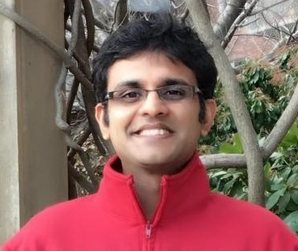
Jay Dhariwal
Assistant Professor, Department of Design, Indian Institute of Technology Delhi

Seshan Srirangarajan
Assistant Professor, Department of Electrical Engineering, Indian Institute of Technology Delhi
Rama Krishna K
Assistant Professor, Department of Mechanical Engineering, Indian Institute of Technology Delhi
Sachin Kumar B
Assistant Professor, Centre for Biomedical Engineering, Indian Institute of Technology Delhi
Sanjeev Sanghi
Professor, Department of Applied Mechanics, Indian Institute of Technology Delhi
Ajeet Kumar
Professor, Department of Applied Mechanics, Indian Institute of Technology Delhi
Amitabh Bhattacharya
Professor, Department of Applied Mechanics, Indian Institute of Technology Delhi
Vamsi K. Chalamalla
Assistant Professor, Department of Applied Mechanics, Indian Institute of Technology Delhi
Murali R. Cholemari
Associate Professor, Department of Applied Mechanics, Indian Institute of Technology Delhi
Photos
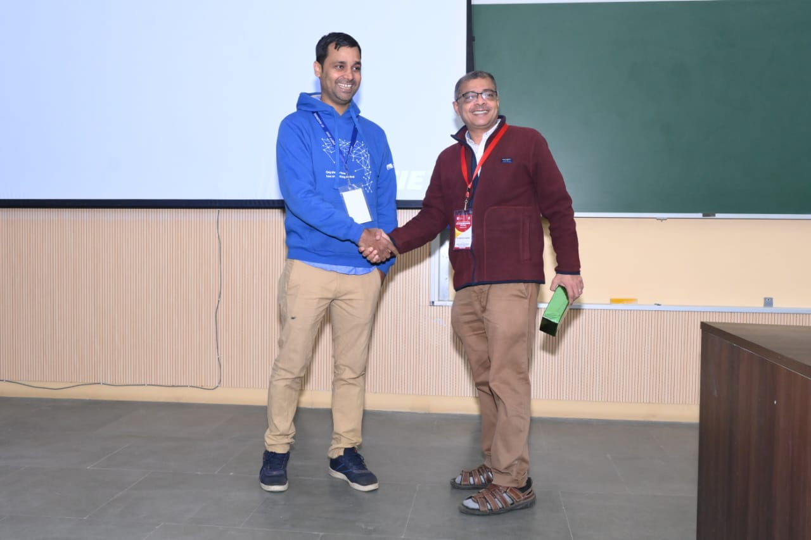

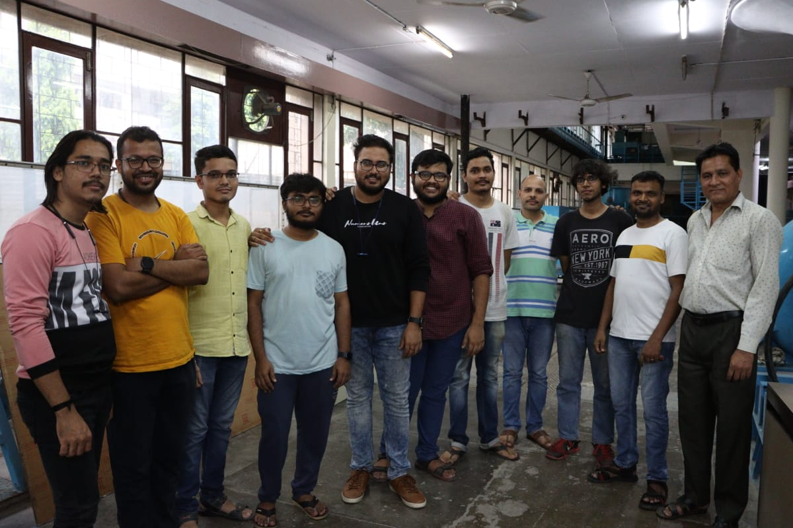
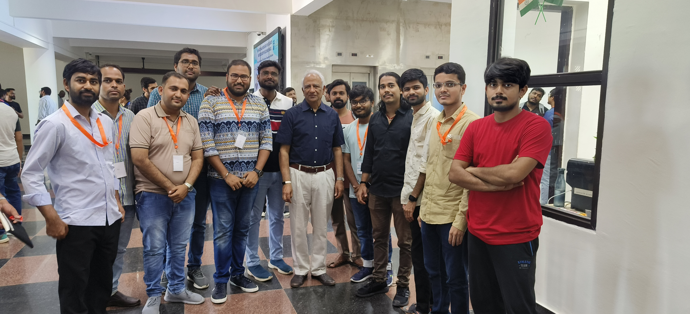
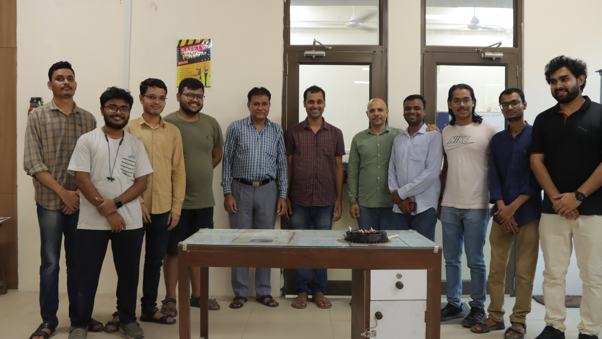

Opportunities
I have openings for post-doc and JRF/project scientist. I strongly encourage dedicated students to contact me for their Masters or PhD study. My lab (Fluids lab for
Environment, Engineering, and Biology: FE2B) focuses on Understanding Turbulence For Societal And
Industrial Need: Two phase, Stratified And Elastic flows. We are basically a group of experimental enthusiasts interested in
solving fluid dynamics problems. Interested students are encouraged to contact me personally at
narsingjha@am.iitd.ac.in attaching resume and SOP.
Contact
Email To: narsingjha@am.iitd.ac.in
Block - III, Room No. 233
Main building
Deptt. of Applied Mechanics
Indian Institute of Technology, Delhi 110016
Contact: +91-11-2654-8424